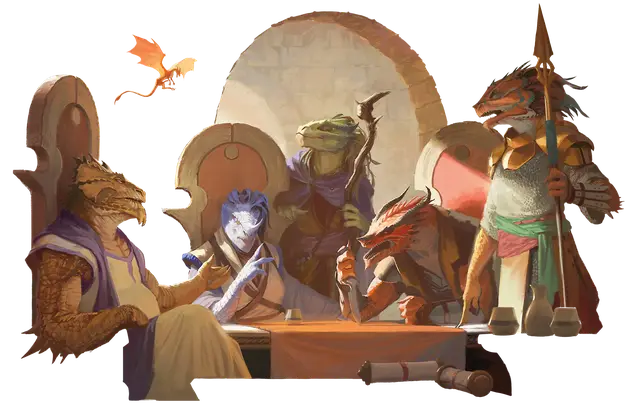

Драконорождённый
Dragonborn

Тип существа Гуманоид
Размер Средний (рост около 5-7 футов)
Скорость 30 футов
Предки драконорождённых вылупились из яиц хроматических и металлических драконов. Одна версия гласит, что эти яйца получили благословение драконьих божеств, Бахамута и Тиамат, которые хотели заселить мультивселенную по своему образу и подобию. Другая утверждает, что драконы создали первого драконорождённого без благословения богов. Каким бы ни было их происхождение, драконорождённые расселились на Материальном плане.
Драконорождённые выглядят как бескрылые двуногие драконы — чешуйчатые, ясноглазые, ширококостные, с рожками на головах — а их окраска и другие особенности напоминают их драконьих предков.
Особенности
Вы обладаете следующими особенностями вида:
Наследие драконов. Вы ведёте свой род от прародителя-дракона. Выберите вид дракона из следующей таблицы. Этот выбор влияет как на ваш внешний вид, так и на особенности Оружие дыхания и Сопротивление урону.
| Дракон | Тип урона |
| Белый | Холод |
| Бронзовый | Электричество |
| Зелёный | Яд |
| Золотой | Огонь |
| Красный | Огонь |
| Латунный | Огонь |
| Медный | Кислота |
| Серебряный | Холод |
| Синий | Электричество |
| Чёрный | Кислота |
Оружие дыхания. Когда в ваш ход вы совершаете действие Атака, можете заменить одну из ваших атак выдохом магической энергии либо в виде 15-футового Конуса, либо в виде 30-футовой Линии шириной 5 футов (на ваш выбор при каждом применении). Каждое существо в области действия должно пройти спасбросок Ловкости (Сл 8 + ваши модификатор Телосложения и Бонус владения). При провале существо получает 1к10 урона; его тип определяется вашей особенностью Наследие дракона. При успехе существо получает половину этого урона. Этот урон увеличивается на 1к10, когда вы достигаете 5-го (2к10), 11го (3к10) и 17-го (4к10) уровней персонажа.
Вы можете использовать Оружие дыхания количество раз, равное вашему Бонусу владения. Вы восстанавливаете все потраченные использования после завершения Долгого отдыха.
Сопротивление урону. У вас есть Сопротивление типу урона, определяемому вашей особенностью Наследие драконов.
Тёмное зрение. У вас есть Тёмное зрение дальностью 60 футов.
Драконий полёт. Достигнув 5-го уровня персонажа, вы можете использовать драконью магию, чтобы временно отправить себя в полёт. Бонусным действием вы выпускаете из спины призрачные крылья, которые сохраняются в течение 10 минут или до тех пор, пока вы не уберёте их (действий не требуется) или не получите состояние Недееспособный. В течение этого времени у вас есть Cкорость полёта, равная вашей Скорости. Ваши крылья выглядят состоящими из той же энергии, что и ваше Оружие дыхания. Как только вы используете эту особенность, вы не сможете сделать это снова, пока не завершите Долгий отдых.